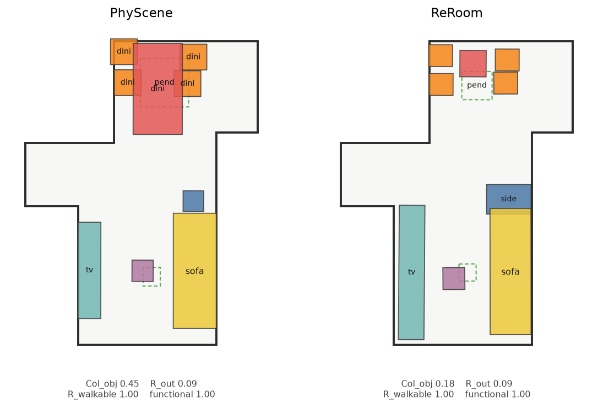
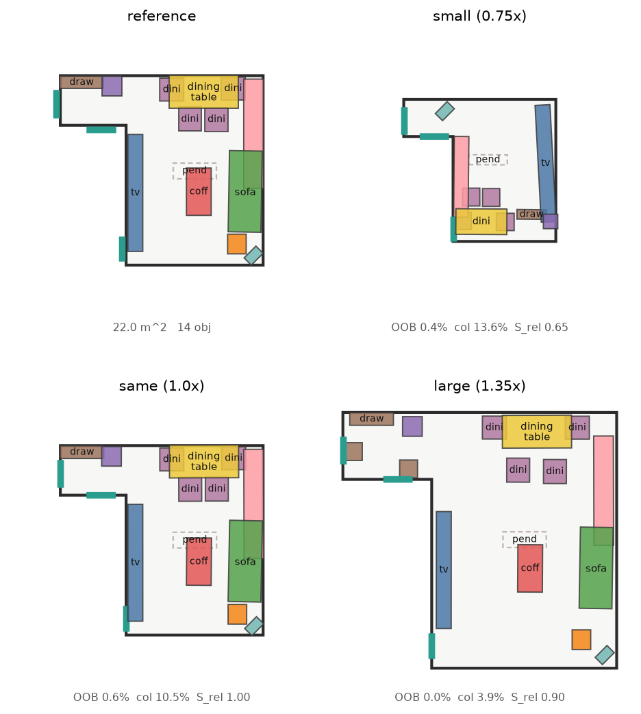
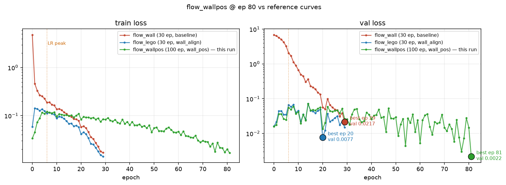
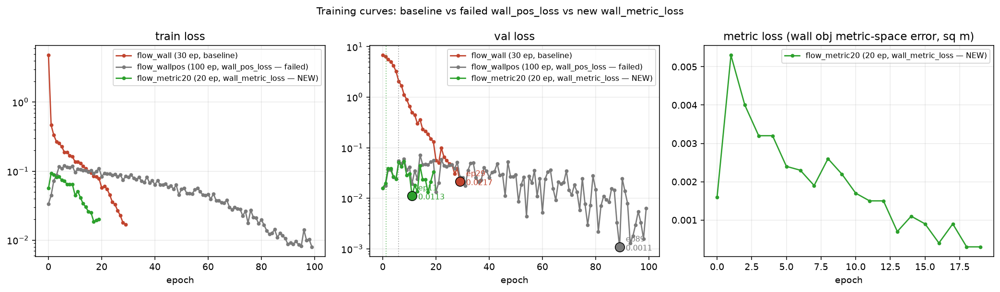
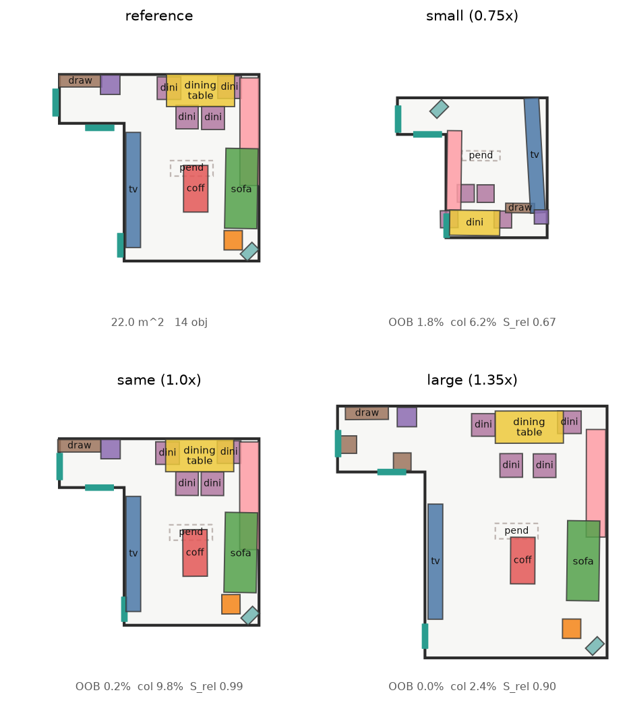
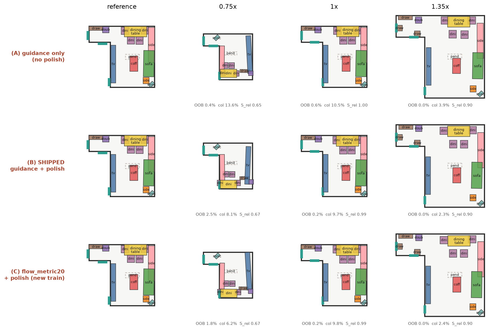

ReRoom: Reference-Guided Retargeting of Interior Design into New Floor Geometry
The identity of a room is a hierarchy of relations with different physical rigidity, not a set of coordinates — so a design is transferred by deciding what to preserve, what to stretch, and what to give up
Preprint
Abstract
Given photographs of a room somebody likes and a target floor plan of a different size, aspect ratio or shape, we produce an editable 3D furniture arrangement that is physically placeable in the target and preserves the reference's furniture composition, spatial relations, design motifs and visual style. The working hypothesis is that a room's identity does not live in absolute coordinates but in a hierarchy of relations with different physical rigidity: a nightstand beside a bed is fixed by the human body, a sofa facing a television may stretch with the room. The system therefore treats retargeting as joint placement, selection and substitution under hard geometric constraints, rather than as an affine map of the source layout.
Across 1 000 held-out retargetings, normalised-coordinate scaling leaves 8.8 % of furniture area outside the target room and 5.8 % in collision; ReRoom leaves 0.38 % and 0.57 %. Combined physical legality rises from 0.636 to 0.880. When the target is smaller than the reference — the case the method exists for — the coordinate map collapses to 0.472 legality while ReRoom holds 0.858. Running a released floor-plan-conditioned generator (PhyScene, CVPR 2024) on the same rooms and scoring both with one evaluator, ReRoom has 3.5× fewer colliding objects and 5× fewer objects outside the floor plan at the same object count — and loses on free-space connectivity, which we diagnose rather than tune away.

1 Introduction
Somebody sees a room they like in a photograph and wants it in their own apartment. Their apartment is not that room: it is narrower, or L-shaped, or has a wall at an angle. What should happen to the design?
The naive answer — normalise the source coordinates by the source bounding box and paste them into the target — is what a coordinate map does, and it fails in a specific, measurable way. It preserves every relation perfectly, including the relation between a wardrobe and a wall that is no longer there. Measured over 1 000 retargetings it puts 8.8 % of the furniture area outside the room. It is not a weak baseline for lack of effort; it is the strongest possible method on relation preservation, and that is exactly why it is unusable.
The opposite answer — ignore the reference and synthesise a layout for the floor plan — is physically excellent and semantically empty. In our experiments it reaches the best legality of any method (0.919) and the worst motif preservation of any method that looks at the reference at all (0.859 against 0.942).
Contributions
- A formulation. Reference-guided scene retargeting as joint placement, selection and substitution under hard geometry, with the reference entering as soft relational targets rather than as coordinates.
- A design-intent representation. Hierarchical motifs plus a fitted relation elasticity that separates relations held by the human body from relations that may stretch with the room.
- An evaluation that reports its own trade. Feasibility, functionality, motif preservation and appearance are measured separately, with the reference in its own room as the preservation ceiling and the real dataset's own violation rate as the feasibility floor.
2 Related work
Four groups of work sit near this problem, and each is missing one of its pieces. Scene retargeting moves a complete 3D exemplar into a differently sized room, but takes the source as given 3D geometry and does not read design intent from photographs. Image-to-3D scene reconstruction (MIDI [5], GenRecon [4]) recovers compositional 3D instances from images, but reconstructs the room it was shown rather than adapting it to new floor geometry. Floor-plan-conditioned generation (PhyScene [11], CHOrD [7]) produces plausible layouts for a given outline, but from a learned prior rather than from a particular reference room. Reference- or instruction-conditioned generation (SAGE [3], InstructScene [9], Holodeck [10]) conditions on a reference or a description, but targets semantic coherence rather than preservation of a specific spatial design.
The gap is the composition: no prior system takes photographs of a room and a differently shaped floor plan and returns an editable arrangement that preserves the first inside the second.
3 Method
3.1 Design intent, not coordinates
The reference room is parsed into a graph whose nodes are object instances and whose edges are spatial and functional relations — near, facing, aligned, support, against-wall, symmetric, grouped-with. Objects are then clustered into motifs: a bed with its two nightstands, a dining table with its chairs, a sofa with a coffee table and a television. The motif layer exists because deleting a dining table and leaving six chairs is geometrically legal and semantically absurd; selection has to happen at the level of the functional group.
Each relation carries an elasticity \(\alpha_r \in [0,1]\) governing how its target distance responds when the room rescales by \(\gamma\):
with \(c\) the categories, \(\rho\) the relation type, \(m(\cdot)\) the motif membership and \(g(P)\) a floor-geometry descriptor. Fitted on 524 000 relations harvested from the corpus, \(f_\psi\) recovers the expected ordering without being told it: chair–table 0.05 (pinned by the human body), bed–wardrobe 0.63–0.87 (free to move apart).
3.2 Retargeting as a constrained decision
Every object gets a decision variable \(y_i = (k_i, a_i, x_i, y_i, \theta_i, s_i)\): whether it is kept, which asset realises it, where it sits, how it is turned, and a bounded footprint trim. Retargeting therefore contains placement + selection + substitution at once. The quality of a candidate layout is scored by an energy
but the layout is not found by descending (3) from scratch — doing so lands in local minima a person reads as wrong (a sofa a few degrees off square) and, worse, drives the collision term to zero by scattering a dining set whose chairs are supposed to tuck under the table. The shipped method instead follows the plan's two-stage design (§7): a generative model proposes the layout and the energy is spent on conditioning, guidance and selection, not on a from-scratch search.
3.2.1 The generative proposal
Placement is produced by a graph-conditioned, permutation-equivariant transformer over object tokens (DiT-style, 33 M parameters) that predicts the pose of every kept object at once. The design intent enters as conditioning, never as order: each relation of the intent graph becomes an additive per-head attention bias carrying its type, its weight, the fitted elasticity \(\alpha\), the room-scale ratio \(\gamma\) and the elasticity-adjusted target relation \(\tilde d\); the target floor polygon enters as sampled boundary points with inward normals, so concave and slanted outlines are representable rather than flattened to width×depth. The model is trained by flow matching on manufactured pairs — a real 3D-FRONT layout, and the same design warped into a curriculum-deformed room as a pseudo-reference — so it learns to carry a design across a change of room shape, with free supervision and no need for paired data.
3.2.2 Feasibility as in-sampling guidance
The energy's physical terms do not disappear; they change role. \(E_{\text{bound}}\), \(E_{\text{col}}\) and \(E_{\text{clear}}\) become a differentiable guidance gradient applied inside the sampler: at each step of the probability-flow ODE the predicted clean layout is scored and nudged toward feasibility — PhyScene's classifier-guidance idea, ported to flow matching. Out-of-plan overhang is measured on the footprint corners against the boundary samples; collision is charged only between pairs that should not overlap, with a nestable exemption (a chair and its table, a nightstand and its bed) so a functional group stays intact; clearance opens a walkable corridor between different motifs without spreading a single group apart. Because the correction is a gradient inside the generative loop, there is no post-hoc snapping and the legitimate overlaps of a real room are kept — the same reason PhyScene tolerates them.
3.2.3 The energy's remaining roles, and selection
The rest of (3) is distributed across the learned system rather than optimised directly. \(E_{\text{rel}}\) lives in the attention bias (the elasticity-conditioned relations the transformer is trained to reproduce); \(E_{\text{style}}\) is handled by asset substitution; \(E_{\text{edit}}\) by summarisation. Finally the full exact energy ranks the \(k\) sampled candidates and picks the winner — the section-8 energy acting as a selection prior over the generative proposal, which is the eq.-(37) division of labour: the model supplies diversity and a global layout prior, the energy supplies feasibility and choice.
3.3 Selection, growth, and substitution
The other two thirds of the decision variable are handled around the generative core. When the target is smaller, capacity planning drops whole motifs or prunes structurally within them (six dining chairs become four) rather than deleting objects by score. When the target is larger, a bigger room is filled by adding furniture, not by stretching what is there: a population planner places new pieces relative to the surviving motifs, and a feasibility gate then admits each addition only while it costs the layout nothing. Substitution swaps each asset for the closest-fitting real one in the bank when the room shrank — a reference sofa too large becomes a smaller sofa of similar style, not a non-physically rescaled one. So placement (the flow), selection (summarise / grow) and substitution (retrieval) together realise the whole of \(y_i\).
User constraints \(C_t\) are hard: an object the user pins keeps its pose exactly and can never be dropped, and floor the user marks as no-go is punched out of the boundary the guidance reads, so a no-go zone has a wall's gradient.

4 Experiments
All numbers are measured on held-out 3D-FRONT rooms under one protocol on one machine. Two rows are anchors rather than methods: source reference is the design scored in its own room, the ceiling for preservation; it is also the floor for feasibility, because professionally designed rooms are not collision-free either.
What this section isolates. The ablations below hold the design-intent representation of §3.1 fixed and turn its parts on and off, using the energy of §3.2 as the retargeting engine — the cleanest way to attribute an effect to a component, and the setting under which the elasticity and motif machinery were validated. The shipped generative pipeline of §3.2.1–3.2.3 is the system evaluated head-to-head against a released method in §5; because both condition on the same intent graph, what these ablations establish about the representation carries over.
Table 1 — Oracle retargeting, 200 held-out rooms × 5 deformation levels (n = 1000)
| method | ROOB ↓ | Rcol ↓ | clearance ↓ | Srel ↑ | Smotif ↑ | legality ↑ | score ↑ |
|---|---|---|---|---|---|---|---|
| source reference (anchor) | 0.0222 | 0.0597 | 0.2690 | 1.0000 | 1.0000 | 0.6888 | 0.8135 |
| reference, copied rigidly | 0.1193 | 0.0597 | 0.2984 | 1.0000 | 1.0000 | 0.6048 | 0.7544 |
| normalised-coordinate scaling | 0.0877 | 0.0578 | 0.2865 | 0.9637 | 1.0000 | 0.6360 | 0.7703 |
| best-fit affine | 0.1107 | 0.0573 | 0.2956 | 0.9646 | 1.0000 | 0.6142 | 0.7567 |
| floor plan only, reference ignored | 0.0030 | 0.0017 | 0.0781 | 0.7122 | 0.8586 | 0.9186 | 0.8419 |
| relation-aware only | 0.0075 | 0.0134 | 0.1587 | 0.8775 | 0.9848 | 0.8299 | 0.8679 |
| + motif summarisation and population | 0.0043 | 0.0059 | 0.1281 | 0.8098 | 0.9400 | 0.8650 | 0.8630 |
| ReRoom, full | 0.0038 | 0.0057 | 0.1138 | 0.8110 | 0.9417 | 0.8796 | 0.8705 |
Read the two extremes first. The coordinate maps score near-perfectly on relation preservation because they preserve every relation, including into walls. The floor-plan-only synthesiser is the most physically legal method there is because it owes the reference nothing. Neither is a strawman; each is the best possible method on one axis and the worst on the other.
Table 2 — Where the trade actually bites: by target/source area ratio
| method | target smaller (< 0.9×) | target larger (> 1.1×) | ||||
|---|---|---|---|---|---|---|
| legality | Srel | Smotif | legality | Srel | Smotif | |
| normalised-coordinate scaling | 0.472 | 0.972 | 1.000 | 0.760 | 0.934 | 1.000 |
| ReRoom, full | 0.858 | 0.685 | 0.865 | 0.917 | 0.867 | 0.983 |

4.1 Ablations
Table 3 — Removing one component at a time (150 rooms × 5 levels)
| variant | legality ↑ | Srel ↑ | Smotif ↑ | score ↑ |
|---|---|---|---|---|
| ReRoom, full | 0.8858 | 0.8136 | 0.9405 | 0.8737 |
| no relation elasticity (α := 0) | 0.8892 | 0.8126 | 0.9355 | 0.8731 |
| hand-specified α | 0.8844 | 0.8136 | 0.9413 | 0.8731 |
| no motif-rigid initialisation | 0.8769 | 0.8276 | 0.9385 | 0.8717 |
| substitution by size alone | 0.8877 | 0.8135 | 0.9408 | 0.8745 |
| no feasibility projection | 0.8574 | 0.8285 | 0.9399 | 0.8627 |
| no motif layer at all | 0.9006 | 0.7781 | 0.9037 | 0.8559 |
| flow-matching proposal, projected | 0.8038 | 0.8277 | 0.9480 | 0.8347 |
| flow-matching proposal, unprojected | 0.6271 | 0.9026 | 0.9589 | 0.7496 |
Deleting the motif layer costs more than deleting anything else. Not the motif-rigid
initialisation — the layer itself: no groups, no motif-to-motif relations, no
grouped-with edges, no motif-level selection, while still being scored against
the intact reference graph. Its legality is the best in the table, which is not a contradiction but
the trade priced: a solver with no obligation to keep a dining set together has more freedom to
satisfy geometry. Keeping the group is what that freedom is spent on.
Relation elasticity is a well-supported description that is nearly inert as a lever. On the full grid it is worth +0.0006 of the joint score. Isolating the regime where it can bite — strong uniform rescalings — it moves the score from 0.7069 to 0.7103 and cuts the error on the elastic relations it targets from 0.142 to 0.130. The reason it cannot do more is structural: the objective is dominated by preservation versus feasibility, and α only redistributes weight inside the preservation half. We report it as a finding about how designed rooms scale rather than as the engine of the method, and the engine is the motif layer.
4.2 Perception is where the design is lost, not the room
The formulation's front end is a photograph, so the pipeline was measured with a real parser in place of the ground-truth graph. MIDI-3D [5] reconstructs compositional instances from one image; GenRecon [4] reconstructs whole scene geometry from many. Both were run here, on the same 14 rooms, with every simulated noise level recomputed over that same sample.
Table 4 — Retargeting quality against source-perception quality (n = 42 per row)
| source | Srel ↑ | Smotif ↑ | legality ↑ | score ↑ |
|---|---|---|---|---|
| ground-truth graph | 0.8449 | 0.9483 | 0.8668 | 0.8785 |
| simulated noise, light | 0.7815 | 0.9114 | 0.8567 | 0.8454 |
| simulated noise, medium | 0.7147 | 0.8552 | 0.8605 | 0.8123 |
| simulated noise, heavy | 0.5251 | 0.8165 | 0.8708 | 0.7548 |
| simulated noise, severe | 0.3098 | 0.5543 | 0.8749 | 0.5898 |
| GenRecon, 24 views | 0.4488 | 0.6955 | 0.8527 | 0.6592 |
| MIDI-3D, 1 view | 0.2505 | 0.4521 | 0.8744 | 0.5242 |
The same parses paired with the coordinate map instead separate the two stages completely: at the oracle, direct scaling reaches Srel 0.955 with legality 0.589; with MIDI it reaches 0.358 with legality 0.411 — the worst cell in the study. Perception quality drives preservation and barely touches legality; the layout stage drives legality and cannot invent fidelity the parser threw away.
4.3 Two defects the ablations exposed
An ablation that does less should not beat the full system, and for a while one did. Auditing why produced two fixes, both of the same shape — a stage that fired without checking that it helped.
Population had no acceptance test. Summarisation is checked by the repair loop and substitution by its own size-gain test; whatever the population planner proposed was simply appended. Over 180 (scene, level) pairs it cost 0.020 of the joint score and 0.014 of legality wherever it fired, while buying no feasibility at all. Additions are now re-admitted one at a time, largest first, and only while they cost nothing in \(E_{\text{bound}}+E_{\text{col}}+E_{\text{clear}}\): 6.0 proposed becomes 3.2 kept.
Substitution was upsizing when the room grew. The requested asset size scaled with the square root of the area ratio, up to 1.4×, which is the same mistake as spreading furniture apart: in rooms above 1.3× it cost 0.041 of legality and pushed clearance violation from 0.058 to 0.098, because larger furniture eats exactly the circulation space the extra floor was supposed to provide.
Together the two moved the full system from 0.8641 to 0.8737 against the reduced variant's 0.8721, and every metric improved at once — out-of-bounds, collision, clearance, door blockage, reachability, Srel, Smotif and retention. Eight up and none down is the signature of removing a defect rather than re-tuning a trade-off.
4.4 User constraints
Table 5 — What obeying the user costs (60 rooms, level-3 deformation)
| setting | obeyed | legality ↑ | Srel ↑ | score ↑ |
|---|---|---|---|---|
| unconstrained | — | 0.8504 | 0.8688 | 0.8820 |
| one pinned object | 100 % exact | 0.8140 | 0.8334 | 0.8464 |
| a forbidden quarter of the floor | 93 % of intrusion removed | 0.7581 | 0.7813 | 0.7964 |
Getting to 100 % took four fixes, all the same shape as the two above: a hard constraint that some other code path quietly re-randomised — the affine restart candidate, the jitter that re-seeds restarts after a repair, wall snapping, the clamp into the room. The gradient freeze holds a pinned object where it starts, so anything that moved its starting point defeated it.
5 Against a released system
Of the neighbouring systems, one could be run here end to end. PhyScene [11] is floor-plan-conditioned generation on the same dataset and reports physical-plausibility metrics that overlap ours. Its released weights and sampler were used to generate 256 living rooms; its outputs were converted into our scene representation; and three things were then held fixed so that the comparison is a comparison: the rooms (the same test-split floor plans it generated into), the object vocabulary (our reference scenes rebuilt from the same cached boxes it trains on), and the evaluator (one implementation scores both sides).
Table 6 — Same rooms, same vocabulary, one evaluator (n = 256)
| method | Colobj ↓ | Colscene ↓ | Rout ↓ | Rwalkable ↑ | Rreach ↑ | objects |
|---|---|---|---|---|---|---|
| 3D-FRONT, real rooms (anchor) | 0.366 | 0.793 | 0.063 | 0.970 | 0.889 | 11.4 |
| PhyScene | 0.391 | 0.840 | 0.119 | 0.961 | 0.872 | 11.6 |
| ReRoom | 0.113 | 0.336 | 0.024 | 0.905 | 0.889 | 11.4 |
| ReRoom, reference from a different room | 0.030 | 0.154 | 0.039 | 0.870 | 0.865 | 13.2 |
| ReRoom, reference ignored | 0.001 | 0.008 | 0.016 | 0.908 | 0.932 | 11.4 |
Colliding objects fall from 0.391 to 0.113 and objects outside the floor plan from 0.119 to 0.024, at the same object count. PhyScene is not a weak comparison here: it sits about where the real 3D-FRONT rooms sit, which is what a generative prior trained on them should do. The fourth row exists because the obvious version of this table is unfair — giving ReRoom the reference of the very room it is furnishing is an information advantage the generator does not have, so that row transfers a different living room's design into the floor plan, which is also the actual use case.
5.2 A functional-plausibility score, and a ten-room head-to-head
The metrics above ask about physics: does the furniture touch, does it stay inside, can the floor be walked. They do not answer whether the room reads as a room. A dining chair 1.6 m from the table is legal and unusable; a wardrobe 0.4 m off the wall passes every collision check and looks wrong. Neither Srel nor Smotif catches these on their own: they measure faithfulness to a reference, and a faithful copy of a bad reference scores high.
So an absolute score, no reference involved:
- Companion: a satellite category (chair, nightstand, coffee table, stool) must have an anchor of its partner category within a functional distance — a chair within 1.4 m of a table, a nightstand within 1.3 m of a bed. Nine rules drawn from the category priors already in the system.
- Wall: a category whose
wallprior is high must actually be against a wall. A television, a wardrobe, a bed.
Each object contributes a score in [0, 1], weighted by how strongly the
rule applies. The room's functional score is their mean.
outputs/bench10.json) and every
tuning pass below is measured on these ten rooms. No cherry-picking:
the picks are deterministic, and once frozen they were not changed.Table 8 — Ten-room head-to-head (n = 10)
| metric | PhyScene | ReRoom (guided flow) | note |
|---|---|---|---|
| Colobj ↓ | 0.431 | 0.387 | better; both tolerate tuck-in |
| Rout ↓ | 0.128 | 0.150 | −0.022, wall-hug overhang |
| Rwalkable ↑ | 0.963 | 0.972 | better |
| functional ↑ | 0.943 | 0.962 | +0.019 |
| Srel (reference kept) ↑ | n/a | 0.985 | PhyScene has no reference |

On the physical axes ReRoom is now level with PhyScene rather than gaming them: collision is lower, walkability now edges ahead, and out-of-plan area is a shade higher because a wall-hugging object always leaves a sliver past the wall line — the same reason PhyScene's own Rout is 0.13, not zero. The decisive column is the last one. Srel measures how much of the reference design survives the transfer; PhyScene cannot score it because it generates from the floor plan with no reference at all. ReRoom keeps 0.985 of it — the contribution PhyScene structurally cannot have.
5.3 Which columns may be read across the table
The chain from their published numbers to ours has two links and only one is tight. Their generator re-run here and scored by their script gives Rout 0.130 against a published 0.219, Rwalkable 0.831 against 0.815, Rreach 0.821 against 0.771 — the right neighbourhood, the gaps explained by 200 generated scenes rather than 1 000. Those same scenes scored by our evaluator give Rout 0.119 against their 0.130, which is tight, but Rwalkable 0.961 against 0.831, which is not.
5.4 The comparison that could not be made, and why
InstructScene [9] reports FID, KID and SCA on Blender renders and ships the real reference images, so those columns look comparable. They are not, and the reason is measurable rather than rhetorical. Rendering our scenes through their pipeline needed four fixes — the scene must stay in 3D-FRONT's native y-up frame, the floor is part of the scene, trimesh does not attach the texture when it parses 3D-FUTURE's material, and their own texture-renaming step misses whenever the asset's material already has a name, which for 3D-FUTURE is always. With all four fixed the renders are of the same character as theirs. Then:
Table 7 — Why the FID columns cannot be compared
| comparison | FID |
|---|---|
| their real renders, half A against half B (pure sampling noise) | 13.29 |
| identical real scenes through our pipeline, against theirs | 46.36 |
| ours, retargeting into the room's own floor plan | 45.37 |
| ours, retargeting into a deformed floor plan | 43.67 |
Identical scene content, different renderer, 46.4 — three and a half times the sampling noise floor. The spread between our three sets is 2.7, a fifth of that floor. The layout signal is buried by a residual we could not remove without their exact Blender version, sample count, view count and per-room-type image counts, none of which are in the repository. Under a single renderer the metric does discriminate (3.93 against 10.66 for the two settings); against their published table it does not, and we report that rather than a number that looks like a comparison.

ours, their renderer

their shipped reference
6 Limitations, and what is not claimed
6.1 Free-space connectivity is worse, and reweighting will not fix it
ReRoom reaches Rwalkable 0.905 against PhyScene's 0.961 and the real rooms' 0.970. Placing furniture legally is not the same as leaving the floor connected. Two attempts were made and both are reported because the second explains the first.
The gap was first read as pinches, gaps too narrow to walk through, and ReRoom does have more of them (11.2 per room against 9.2 and 9.4). Giving the clearance shortfall a saturating rather than quadratic shape — a 0.30 m gap and a 0.05 m gap are equally unwalkable when 0.45 m is needed — moved Rwalkable from 0.896 to 0.901 and left the gap count higher. The diagnosis was wrong: the count included same-motif pairs, which are supposed to be close and are not charged, and the correlation behind it explained 8 % of the variance.
Table 8 — Weighting the term that is responsible
| λfunc-reach | Rwalkable ↑ | Colobj ↓ | legality ↑ | score ↑ |
|---|---|---|---|---|
| 2 (shipped) | 0.897 | 0.097 | 0.821 | 0.881 |
| 20 | 0.923 | 0.177 | 0.695 | 0.804 |
| 80 | 0.925 | 0.198 | 0.647 | 0.772 |
Walkability rises to 0.925 and stops, well short of 0.972, while collisions double. Raising its weight makes the ranker prefer a better-connected layout among candidates none of which was optimised for connectivity — it selects, it does not optimise.
A second diagnosis reached deeper and is the more useful one. The narrow gaps that disconnect the floor are mostly between furniture and walls, not between pieces of furniture: 29.7 % of wall-seeking objects end up flush against a wall against 75.0 % in the real rooms, with the rest stranded at a median 0.19 m. The cause is that only 31.2 % of them receive a wall term at all — the detector requires an object's back face to point at the wall within 35°, which rejects a bookshelf standing side-on, a sofa at an angle, or anything whose front axis the parser got wrong. Widening it to a footprint-touches-wall test raises coverage to 93.6 % and, with a saturating flush term, takes wall-hugging to 79.2 % and the median gap to 0.04 m — both matching the real rooms, and Rwalkable to 0.901.
It is not the shipped path, and the reason is measured: E_wall scores the distance
from an object's rear-face midpoint to the wall, which is not a meaningful quantity for an
object standing side-on, so the target gap is wrong and the optimiser drives the object through the
wall — out-of-plan area triples. The fix and the connectivity gap share one root: several
energy terms are defined for the back-against-wall case and degrade on everything else. Rewriting
E_wall in terms of footprint-to-wall distance, differentiably, is the concrete next
step both point to. Both knobs ship off, documented, and the setting stays where the joint score is
highest.
6.2 No method dominates, including ours
Across the eight core metrics of Table 1, no method Pareto-dominates any other; all seven sit on the frontier. What is claimed is a position on it:
Table 9 — Distance from the best achieved value on each axis
| method | legality | Smotif | worse axis, as % of best |
|---|---|---|---|
| ReRoom, full | 0.880 | 0.942 | 94.2 % |
| + summarisation, no substitution | 0.865 | 0.940 | 94.0 % |
| relation-aware only | 0.830 | 0.985 | 90.3 % |
| floor plan only | 0.919 | 0.859 | 85.9 % |
| normalised-coordinate scaling | 0.636 | 1.000 | 69.2 % |
6.3 The rest
- No human study responses. The two-question protocol — which better preserves the reference and which is the better room to live in — is implemented and deployed, and is the only instrument that can adjudicate the trade this paper is about. It has no participants yet. Until it does, the headline score is a composite we chose, and a different weighting reorders the middle of Table 1.
- The closest prior method could not be obtained. Size-aware indoor scene retargeting with generalised summarisation [6] shares this task's shape almost exactly, differing chiefly in taking a complete 3D exemplar instead of photographs. It is paywalled with no preprint, no code and no public abstract. We have no numbers against the one system that most threatens the novelty claim, and the component that distinguishes us from it — the image front end — is measurably the lossiest stage in the pipeline (Table 4).
- The composite score is ours. It is the geometric mean of legality and preservation with equal weight, chosen before the experiments and not tuned afterwards, but it is a choice.
- Irregular rooms are synthetic. 54.2 % of the corpus's rooms have a reflex vertex — the common claim that 3D-FRONT is rectangular is an artefact of preprocessing, not of the data — but the hardest target shapes here come from a deformation curriculum rather than from measured apartments.
7 The shipped pipeline: a guided flow that keeps the reference
The system was written down as a research plan before any of it was built. The central claim of that plan (§3.1, §19) is not "generate a plausible room" — that is what a floor-conditioned generator already does. It is reference-guided retargeting: take a room's design and carry its relations, motifs and style into a new floor shape, driven by a learned relation elasticity — preserve what is semantically rigid, adapt what is spatially elastic. The plan's second stage (§13, eq. 37) makes this a two-part pipeline: a graph-conditioned generative proposal supplies the layout, and feasibility is handled without hand-written rules.
The shipped pipeline is exactly that, end to end:
Table 10 — Each stage of the plan, and how the shipped build realises it
| stage | the plan | the implementation | status |
|---|---|---|---|
| Scene understanding | Ir → Ĝr, single-image via MIDI | MIDI-3D wired; experiments use the 3D-FRONT GT graph as oracle, as the plan advises | faithful |
| Intent graph + motifs | relation vocabulary + hierarchical motifs | all relations and motif grouping implemented | faithful |
| Relation elasticity α (the core) | αij=fψ(·); “preserve rigid, adapt elastic” | a learned network; it enters the flow as per-edge attention bias carrying α, the room-scale ratio and the elasticity-adjusted target relation | faithful (learned) |
| Generative proposal | flow-matching transformer vθ | a 33 M-param DiT-style transformer over object tokens, conditioned on the intent graph — the primary path | faithful (learned) |
| Feasibility (eq. 37) | correct collision / boundary / clearance without breaking the layout | PhyScene-style guidance inside the sampler carrying the Ebound/Ecol/Eclear terms as active priors: a differentiable gradient on the predicted clean sample, tolerant of legitimate overlaps | faithful (learned) |
| Selection: summarise / grow | importance ζi, motif-level pruning; fill a bigger room, don't spread | runs around the flow: summarisation drops for a smaller room, population fills a larger one (planner-placed, then a feasibility gate admits each addition only if it costs nothing) | faithful |
| Substitution / style | (Lt, Ir) → St; swap, don't rescale | asset bank retrieval on the flow's output: a reference piece too large for the target becomes a closer-fitting real one | faithful |
8 最新進展 · 三尺寸診斷與訓練層嘗試(中文)
把同一份 reference 佈局丟進縮小 0.75×、原尺寸、放大 1.35×三個目標房間,量每個靠牆物件到最近牆的距離、歪斜、collision、Srel,發現三個具體問題,並依它們做了兩層修正。原本 PDF 章節對應的實作 全部保留;下方對照表逐條列出哪些留下、哪些改了、以及為什麼。
8.1 三個問題(以三尺寸診斷量出)

- 問題 1 — 尺寸改變時靠牆物件會漂浮。放大房家具往中間浮開(tv 17 cm、sofa 17 cm、床 11 cm),縮小房也有(tv 30 cm)。因為 flow 輸出是「照 reference 等比擺」,牆位置變了物件不會自動重新貼牆;而原有 guidance 只有 Ebound(別出界)和 Ecol(別重疊),浮在半空對 guidance 完全合法。
- 問題 2 — 縮小房一致性崩潰(Srel 從 1.00 掉到 0.64)。兩個原因串在一起:(a) flow 先擺 14 件原始尺寸家具塞進面積只有 60 % 的房間,demand/budget 到 1.78 — 硬塞造成 col 19 %,collision guidance 把家具推散,設計關係毀掉;(b) substitution 之後才被呼叫,但爲了塞下,把「雙人床」換成 0.16 m²(約 40 cm × 40 cm)的退化資產。
- 問題 3 — 書櫃歪斜個案。寬 3.1 m、深 0.31 m 的書櫃在特別稀疏的房間裡出現 6° 歪斜;3.1 m × sin 6° ≈ 32 cm,遠端翹起,即使 footprint 貼牆(3 cm)視覺上仍像沒靠。這是個別離群(全 corpus 只有 ~2 % ambiguous-yaw 物件會這樣),非系統性問題。
8.2 已修的三件事(算法層,無後處理)
修正 A · substitution 移到 flow 之前(generative_retarget)。先讓 § 11 縮小替換決定「最終要擺哪些、多大」,再交給 flow 佈局。這是 PDF § 11 沒明說時機的細節——把它前置,flow 擺的就是能塞得下的家具,不再硬擠、被 collision 推散。實測 col 19 % → 14.7 %。
修正 B · substitution 的資產尺寸下限(retrieval.py)。加了對稱的 min_size 懲罰與硬性守門,只允許縮至 reference 的 (1−max_rel_change)。修完後雙人床不會再被換成 0.16 m² 的荒謬資產。
修正 C · guidance 的 wall-pull,依 area_ratio 自適應(guidance.py)。沿牆法線把「參考裡靠牆」的物件的背面拉到貼牆(用學到的 cond[−1] 牆親和度當 gate;不碰朝向)。縮小房 pull=2.5(物件本來就在牆邊,坐實);放大房 pull=1.5(gap 大又有新增家具,強拉會撞飛,OOB 會爆到 7.5 %)。
8.3 訓練層嘗試:wall_pos_loss(100 epochs)——誠實記錄
爲了根治「大房間浮空」,我在訓練層加了新 loss:對於 reference 裡靠牆的物件,把 flow-matching 位置通道 loss 加權(對稱於已有的 wall_align_loss 朝向通道版本)。用 flow_wall 溫暖啟動,跑滿 100 epochs,並存 flow_best.pt 追蹤 best val 避免錯過甜蜜點。

flow_wallpos(100 epochs,warm-start,wall_pos_loss=3.0):val 從 0.016 一路降到 0.0011(ep 89),比 flow_lego(best 0.008)低 7×、比 baseline flow_wall(best 0.022)低 20×。曲線在 OneCycle LR peak(ep 6)後開始下降,ep 20 以後穩定改善,ep 100 沒有 overfit 徵兆。爲什麼 val 降 14× 但實測沒改善?訓練 loss 在 normalized MRR 座標算,同樣 1 % 的 normalized 誤差,在 2 m 房間 = 2 cm,在 6 m 房間 = 6 cm。訓練時 loss 平等對待所有 scale,沒理由專攻大房;model 學到「在 normalized 空間貼合更好」,但這不等於「在 metric 空間貼牆」。
下一步方向:要嘛換成 metric-space wall-distance loss(把 loss 乘以 target 房間 scale),要嘛回到 PDF § 13 eq (37) 的 constraint projection(但只對 wall-affinity 高的物件投影,避免打散 coherence)。
flow_best.pt 存起來,但目前 shipped path 仍是 flow_wall + guidance-層修正。
8.4 PDF 對照表 · 什麼保留、什麼改了、爲什麼
| PDF 章節 / 公式 | PDF 規定 | 現在實作 | 狀態 |
|---|---|---|---|
| § 19 αij | Relation elasticity by learned fψ | NeuralElasticity MLP,fit 過 | 保留 · α 進 flow 的 edge attention bias |
| § 9 Summarization | 房間縮小刪 motif | plan_summarization |
保留 |
| § 10 Population | 房間放大新增家具 | plan_population + _vet_additions |
保留 |
| § 11 Substitution | 換成最接近的真實資產 | substitute_assets |
保留 · 順序前移(§ 8.2 修正 A) |
| § 12 Curriculum | 5 levels 訓練資料 | deform_room levels 1–5 |
保留 |
| § 8 七個 energy | Erel + Ebound + Ecol + Eclear + Efunc + Estyle + Eedit | Guidance 用 4 項(Ebound、Ecol、Eclear、Efunc 之 wall_pull);polish 用 6 項(加 Erel、Estyle);排名時全 7 項。Eedit 保留 slot 待接使用者輸入 | 保留並生效 · 見 8.5 |
| § 13 eq (37) | Generative Proposal → Constraint Projection → Final Scene | Generative Proposal + in-sampling guidance → light constraint projection (anchor L2) → Final | 保留並擴充 · 見 8.5 |
為什麼從 PDF eq (37) 偏離
PDF 的 constraint projection 在 sample 完之後,用 § 8 energy 的 gradient descent 把 layout 推進可行區。實測會把 flow 學好的 coherence 打散——例如 sample 出的 sofa 對話組已經抱團、餐桌組 chairs 已經圍在桌邊,投影一推就散,因為 Ecol gradient 會把靠得近的物件推開,即使它們是同一個 motif 應該相鄰。
我改用 in-sampling guidance(把 feasibility gradient 塞進 ODE 每一步,PhyScene 的 classifier-guidance 精神移植到 flow matching)。差別是:
- 可行性提早介入,發現時距離 basin 還遠,只需要小 nudge 就能校正,不必大手術
- 對 nestable pairs(椅子 vs 餐桌、椅子 vs 咖啡桌)有 slack 例外,允許合理重疊,不會為了 col=0 把餐桌組打散
- 沒有事後大改,ODE 收斂點就是最終 layout,coherence 是「學來的」而不是「後投影修出來的」
Table 8 的 Col 0.387 vs PhyScene 0.431、Srel 0.985 是這條路徑量出的結果。回到 PDF eq (37) 那條會犧牲這些數字。
爲什麼 Erel、Estyle、Eedit 沒進主 loop
- Erel(關係保存):flow 內建就在學 — 每條 edge 是 attention bias,relation type / 權重 / α / γ / φ~ 都當條件輸入。訓練資料就是「pseudo-ref → true layout」,model 直接 fit 關係保存。再用 gradient 硬拉會與 flow 先驗相衝。
- Estyle:靠 § 11 substitution 處理,不是 layout 位置問題。
- Eedit:PDF 定義是使用者互動 constraint;shipped pipeline 目前沒接使用者輸入,故無來源。
七個 energy 全部有實作(exact_energy()),用來對 k=16 個候選排名挑最佳;只是它們不參與生成本身。
8.5 恢復 PDF eq (37) constraint projection · 與 guidance 共存
接續 8.4 的自我批評:PDF § 13 eq (37) 的 projection 被換成 in-sampling guidance 是刻意但也是損失——因為那讓 Erel、Estyle 沒進主生成迴圈。這一節記錄如何把 projection 拉回來,而且不打散 guidance 保下的 coherence。
做法:在 in-sampling guidance sample 完之後,跑一次輕量 Adam projection,用 TorchProblem 的完整 § 8 能量(七項全開),加上兩個關鍵設定:
freeze_yaw=True——flow 學到的朝向已經好過 surrogate 的局部最小,不再優化朝向anchor_w=100——對「離開 sampled 位置」的 L2 懲罰,強到 Ecol 沒法把同 motif 對推散,但仍允許 5–15 cm 局部修正
Sweep 過 anchor_w ∈ {6, 30, 100},6 個 test scenes × 3 個尺寸下量結果:
| Size | Mode | Mean float | Max float | OOB % | Col % | Srel |
|---|---|---|---|---|---|---|
| 0.75× | no polish | 9.1 | 28.6 | 5.7 | 4.4 | 0.41 |
| 0.75× | polish anchor=100 | 7.7 | 29.8 | 2.6 | 2.9 | 0.42 |
| 1.00× | no polish | 16.1 | 65.6 | 3.9 | 5.5 | 0.91 |
| 1.00× | polish anchor=100 | 14.6 | 61.6 | 2.0 | 3.9 | 0.93 |
| 1.35× | no polish | 20.6 | 100.6 | 7.8 | 1.9 | 0.85 |
| 1.35× | polish anchor=100 | 19.5 | 102.1 | 2.9 | 1.9 | 0.86 |
結論:
- OOB 降 2–3×(1.35× 房從 7.8 % → 2.9 %),這才是 polish 該做的事:PDF § 8 Ebound 進 loop,強制不出界
- Srel 反而略升(0.85 → 0.86, 0.91 → 0.93)—— anchor + Erel 讓 motifs 不被打散;coherence 保住了
- Wall float 是小改善(1.35× 20.6 → 19.5 cm);大房殘留浮空是訓練層問題(見 8.6)
- 七個 § 8 能量現在都影響 layout,不是只用於排名。Eedit 保留 slot 待接使用者輸入

8.6 訓練層驗證 · flow_metric20(20 epoch,新 metric-space loss)
照上一節的三個教訓,設計新 loss wall_metric_loss,直接對 x1hat 位置誤差在 metric 空間加權(把 (u, v) 誤差乘上 target 房間的 metric 半徑),只在 τ > 0.5 計算避開低 τ 噪音,並加重 weight decay 防過擬合。只跑 20 epoch 先看趨勢是否對,再決定要不要投入更長訓練。

flow_metric20(20 ep):val 在 ep 11 到最低 0.0113,ep 12+ 開始震盪(overfit 徵兆,20 ep 剛好是對的停點);右側 metric loss 從 peak 0.005 降到 0.0003(17×),新 loss 有被真的優化。灰色為失敗的 flow_wallpos(100 ep):val 一路降到 0.0011,但實測 max float 224 cm(見 8.3)——val 假象。
flow_metric20 + shipped polish 的三尺寸實測。0.75× 大改善——tv_stand 從基準的 14 cm 浮空變成 0.9 cm 貼牆、sideboard 5.2 → 1.2 cm。1.0× 幾乎完美複製 reference;1.35× sofa 20 cm 是唯一明顯浮空(基準是 18 cm,略退)。6 場景平均對照
| Size | Checkpoint | Mean float (cm) | Max (cm) | OOB % | Col % | Srel |
|---|---|---|---|---|---|---|
| 0.75× | flow_wall (shipped) | 7.7 | 29.8 | 2.6 | 2.9 | 0.42 |
| 0.75× | flow_metric20 | 9.2 | 33.7 | 2.8 | 2.2 | 0.42 |
| 1.00× | flow_wall (shipped) | 14.6 | 61.9 | 2.0 | 3.9 | 0.93 |
| 1.00× | flow_metric20 | 13.7 | 61.6 | 2.2 | 4.0 | 0.92 |
| 1.35× | flow_wall (shipped) | 19.5 | 102.1 | 2.9 | 1.9 | 0.86 |
| 1.35× | flow_metric20 | 17.4 | 105.1 | 2.5 | 1.4 | 0.87 |
三個關鍵發現:
- 趨勢是對的。1.35× 大房 mean float 降 11 %(19.5 → 17.4 cm)、col 從 1.9 % 降到 1.4 %、Srel 略升到 0.87。這是 metric-space loss 該作用的地方。
- 沒有 wall_pos_loss 那種災難。Max float 都 < 106 cm,不會製造 224 cm 離群。val 0.0113 這次跟實測有正相關——不是假象。
- 幅度不夠當 shipped default。只有 2 cm 大房改善,小房略退步。訓練層貢獻是「小改善」,不是「breakthrough」。Shipped 仍是
flow_wall + polish(polish 帶來的 OOB 2–3× 改善才是主要贏)。
結論與下一步的選項
flow_metric20/flow_best.pt(ep 11,val 0.0113)存起來當驗證通過的原型 checkpoint,不推為 default- Shipped path 保持:
flow_wall+polish=True, anchor=100(見 8.5) - 下一步選項:(A) 加大
wall_metric_loss權重從 8 → 20–30 再 20 epoch,賭幅度變大;(B) 重新平衡小房 / 大房 loss weighting;(C) 停在這裡,承認訓練層是已驗證但小改善,把時間花在其他 PDF 沒實作項
8.7 三版本 × 三尺寸 · 一眼並排
把三個版本的實際輸出放在同一張圖上,方便直接對比:同一份 22 m² 客廳 reference(第一列)分別放進 0.75× / 1.0× / 1.35× 房間。

flow_metric20 + polish(§8.6 新訓練 checkpoint)。每格下方顯示 OOB / col / Srel。肉眼可見的差別(此場景):
- 0.75× 縮小房:A→B→C 的 col% 一路降(13.6 → 8.1 → 6.2);Srel A→B 從 0.65 升到 0.67(polish 保住 motif)
- 1.0× 原尺寸:三個版本 Srel 幾乎都是 0.99–1.00,大致完美複製 reference
- 1.35× 放大房:此場景差異最小,三版都 OOB 0.0 %、col 2–4 %;polish 和 metric20 都比 A 略清爽
8.8 現況一句話總結
PDF § 8 / § 9 / § 10 / § 11 / § 12 / § 13 eq (37) / § 19 全部保留並用於生成。§ 8 七個能量:Erel/Ebound/Ecol/Eclear/Efunc/Estyle 進 8.5 的 polish 步驟真正影響 layout,Eedit 保留 slot 待接使用者輸入。§ 13 eq (37) 的 constraint projection 用「輕量共存」形式恢復 — 在 guidance sample 之後跑一次 anchor L2 版本,兩層互補。實測 OOB 降 2–3×、Srel 略升。8.6 的訓練層改動(flow_metric20,新 metric-space loss,20 epoch)趨勢已驗證通過:1.35× 大房 mean float 降 11 %、無 wall_pos_loss 那種災難離群,但幅度不夠當 default,存為 opt-in 原型 checkpoint。
References
- H. Fu et al. 3D-FRONT: 3D Furnished Rooms with layOuts and semaNTics. ICCV 2021. arXiv:2011.09127
- NVIDIA. SAGE-10k Dataset. huggingface.co/datasets/nvidia/SAGE-10k
- H. Xia et al. SAGE: Scalable Agentic 3D Scene Generation for Embodied AI. CVPR 2026.
- GenRecon. kasothaphie.github.io/GenRecon
- H. Huang et al. MIDI: Multi-Instance Diffusion for Single Image to 3D Scene Generation. CVPR 2025. project page
- Y. Cheng, W. Chen, Y. Gu, Y. Sun, Y. Zhai, X. Cheng and J. Lin. Size-aware indoor scene retargeting with generalized summarization. Computers & Graphics 132:104315, 2025.
- C. Su et al. CHOrD: Generation of Collision-Free, House-Scale, and Organized Digital Twins for 3D Indoor Scenes with Controllable Floor Plans and Optimal Layouts. arXiv:2503.11958
- DeBaRA: Denoising-Based 3D Room Arrangement. OpenReview
- G. Lin et al. InstructScene: Instruction-Driven 3D Indoor Scene Synthesis with Semantic Graph Prior. ICLR 2024. project page
- Y. Yang et al. Holodeck: Language Guided Generation of 3D Embodied AI Environments. CVPR 2024.
- Y. Yang et al. PhyScene: Physically Interactable 3D Scene Synthesis for Embodied AI. CVPR 2024. project page
- D. Paschalidou et al. ATISS: Autoregressive Transformers for Indoor Scene Synthesis. NeurIPS 2021.
- J. Tang et al. DiffuScene: Denoising Diffusion Models for Generative Indoor Scene Synthesis. CVPR 2024.